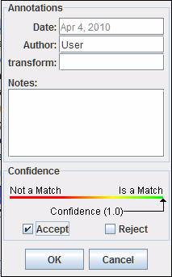

Manual Schema Element Matching
Introduction
Although Harmony is principally designed as a tool for employing automated schema matching algorithms it is often the case that manual methods must be employed to address shortcomings in (or to finalize) the automated analysis. Where there is significant domain knowledge available but documented element metadata is poor it may be necessary to establish element links manually.
Link Creation
To manually create a link between two schema elements, select an element in one schema and drag (with the mouse left-button depressed) to an element in the other schema. Harmony will display a black line between them since user-generated links are always assigned a level of confidence of 1.0 (see Inspecting Mappings).
Metadata regarding that link may be accessed by right-clicking on that line to bring up the Annotations dialog. The line turns blue, indicating that it has been selected, and the element description dialogs (see Element Descriptions) for the two linked elements are automatically displayed.
A sample Annotations dialog is as follows: 
The Date indicates the date on which the link was created or last edited; it is system-determined.
Harmony auto-populates the Author field based on the Windows user account that started Harmony. If desired, it may be changed.
By default, Harmony provides two fields for annotation, labeled Transform and Notes; both are simple text fields.
- The Transform field is intended to store metadata regarding how the link was generated; this is particularly useful when automated schema matching methods are employed. In the case of manual schema matching the value "manual" may be appropriate, or the value may be left unspecified.
- The Notes field contains free-form comments entered by the analyst. It may also be left unspecified.
Selecting Accept and then OK will confirm the confidence score as 1.0; the dialog will close and the link color will remain black.
Selecting Reject and then OK will close the dialog and delete the match link.
Selecting Cancel will simply close the dialog; any changes made to dialog fields will be lost.
Link Management
In addition to link-by-link inspection, several other mechanisms are available to process links. More than a single link may be selected by either:
- Holding down the CTRL-key while repeatedly selecting links with the left-button, or
- Executing "rubber-band multi-select" by using a left-button down-and-drag maneuver to select all links intersecting the rectangle thus defined.
In the case of multi-select the Annotations dialog (activated by a right-click) summarizes the values for all multi-selected links, and takes the indicated action on all included links when the dialog is closed.
The Edit menu includes functions for selecting or removing links, as follows:
-
The "Edit » Select Links..." menu entry selection activates the Select
Links dialog, as follows:
This dialog allows the filtered-selection of links.
-
The "Edit » Delete Links..." menu entry selection activates the Delete
Links dialog, as follows:
This dialog allows the filtered-deletion of links.
Link Finishing
In order to constrain the focus of the automated schema matchers, nodes may be marked as "finished".
-
All match links involving a given entity schema element and its node descendants will be marked as "finished" (with their existing level of confidence) by selecting that schema element with the right mouse-button pop-up menu and then selecting "Mark as Finished".
That menu appears as follows in the context is which it is enabled; e.g., if the "1 Agriculture and Food" node was selected then the following would appear:
The node-icons will subsequently reflect this change by including a check-mark (green for leaf nodes, red for interior nodes).
-
If the given schema element has already been "marked as finished" (thus showing a check-mark in its node-icon) then the right mouse-button pop-up menu will instead include the option of "Mark as Unfinished".
That menu appears as follows in the context is which it is enabled; e.g., if the "1 Agriculture and Food" node was selected then the following would appear:
All match links involving that entity element and its node descendants will be marked as "Unfinished" (with their existing level of confidence). The node-icons will subsequently reflect this change by removing the check-mark.
Nodes that are marked as "finished" will be ignored in the automated schema matching process.